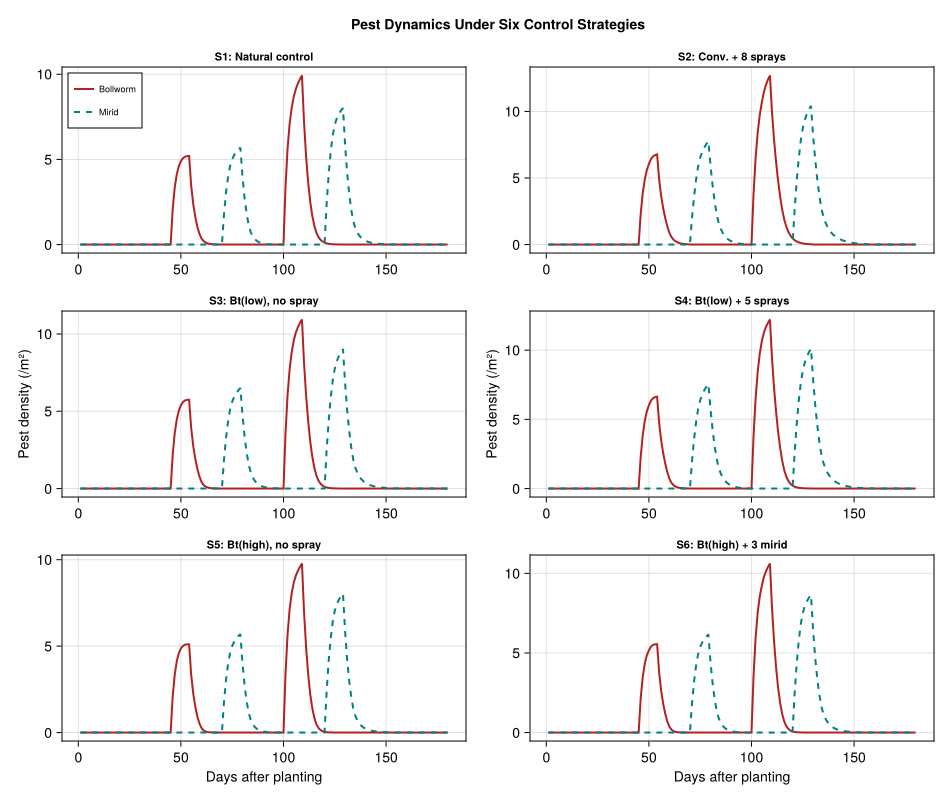
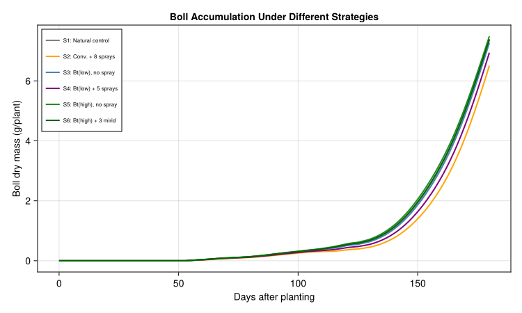
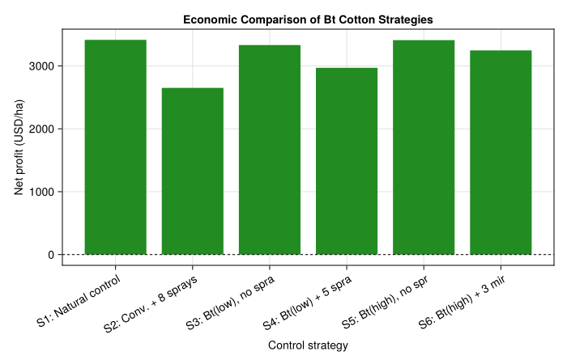
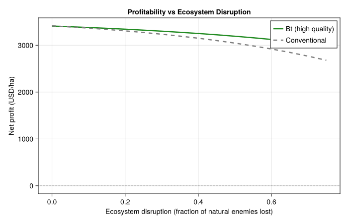

Economics of Bt Cotton in China
PhysiologicallyBasedDemographicModels.jl
- Introduction
- Ecosystem Context
- Parameters
- Weather
- Implementation
- Results
- Analysis
- Discussion
- Parameter Sources
- References
Introduction
Transgenic Bt cotton (Gossypium hirsutum L.) expressing Bacillus thuringiensis endotoxins was introduced in China in the late 1990s to combat the cotton bollworm (Helicoverpa armigera). While Bt cotton dramatically reduced bollworm damage and associated insecticide sprays, large-scale adoption triggered an unforeseen ecological cascade: the suppression of broad-spectrum insecticide use allowed secondary pests — particularly mirids (Apolygus lucorum and Adelphocoris spp.) — to proliferate across cotton and adjacent crops (Lu et al. 2010).
Pemsl et al. (2008) developed a bio-economic model combining a physiologically based cotton growth model with stochastic partial budgeting to assess the economics of Bt cotton under varying degrees of ecosystem disruption in Shandong Province, China. Their key finding was that the profitability of Bt varieties depends critically on the state of the ecosystem: in an undisrupted ecosystem with intact natural enemy populations, natural control alone is the most economical strategy, while in highly disrupted ecosystems Bt cotton combined with moderate insecticide use becomes profitable.
Pemsl et al. (2005) further documented that many Bt cotton farmers in China continued using high levels of pesticides, partly because of low-quality Bt seed with reduced toxin expression and partly because secondary sucking pests (aphids, mirids, spider mites) required chemical control that Bt toxins do not provide.
This vignette implements a simplified bio-economic model of the Bt cotton system in China’s Yangtze River cotton belt using the PhysiologicallyBasedDemographicModels.jl API, capturing cotton growth, bollworm suppression by Bt, secondary mirid outbreaks, and the economic comparison of alternative control strategies.
Ecosystem Context
The cotton agro-ecosystem in China involves a trophic web with three functional groups relevant to pest management (Gutierrez et al. 2006; Wu and Guo 2005):
- Cotton plant — the resource base, modelled as leaf, stem, root, and boll (fruit) subunit populations linked via a metabolic pool.
- Cotton bollworm (H. armigera) — the primary target of Bt toxin, feeding on squares and bolls. Bt cotton reduces bollworm survival by 60–95% depending on toxin expression quality.
- Mirids (Apolygus lucorum) — secondary sucking pests that feed on squares and young bolls, causing bud abscission. Historically suppressed as bycatch of bollworm-targeted insecticide sprays, mirid populations surged after Bt adoption reduced spray frequency.
Natural enemies (parasitoids, predators) provide background control of both pest groups but are themselves vulnerable to insecticide disruption.
using PhysiologicallyBasedDemographicModels
using CairoMakieParameters
Cotton Plant Parameters
Cotton plant growth follows the Gutierrez metabolic pool framework (Gutierrez, Pizzamiglio, et al. 1991; Gutierrez, Santos, et al. 1991). The base temperature for cotton development is 12 °C with an upper threshold of 35 °C. Radiation use efficiency is 1.5 g DM per MJ intercepted, with a light extinction coefficient of 0.49 and specific leaf area of 200 cm²/g.
# Cotton development: base 12°C, upper 35°C (Gutierrez et al. 2006)
const T_BASE_COTTON = 12.0
const T_UPPER_COTTON = 35.0
cotton_dev = LinearDevelopmentRate(T_BASE_COTTON, T_UPPER_COTTON)
# Canopy parameters (Gutierrez et al. 1991; Pemsl et al. 2008)
const SLA_COTTON = 200.0 # cm²/g → 0.02 m²/g
const EXTINCTION_COTTON = 0.49 # light extinction coefficient
const RUE_COTTON = 1.5 # g DM / MJ intercepted
function cotton_photosynthesis(leaf_mass_g, radiation_MJ; plants_per_m2=6.0)
lai = leaf_mass_g * SLA_COTTON * 1e-4 * plants_per_m2 # m²/m²
frac_intercepted = 1.0 - exp(-EXTINCTION_COTTON * lai)
return frac_intercepted * radiation_MJ * RUE_COTTON / plants_per_m2
endcotton_photosynthesis (generic function with 1 method)Bollworm Parameters
Bollworm dynamics are temperature-driven with a base development temperature of 10.5 °C. Each larva consumes ~0.3 g boll tissue per degree-day, and Bt toxin reduces survival with an efficacy that depends on seed quality (Pemsl et al. 2008; Gutierrez et al. 2006).
# Bollworm (Helicoverpa armigera) parameters
const T_BASE_BOLLWORM = 10.5
const BOLLWORM_DD_GEN = 450.0 # degree-days per generation
const BOLLWORM_CONSUMPTION = 0.30 # g boll tissue / larva / dd
const BOLLWORM_FECUNDITY = 800.0 # eggs per female
const BOLLWORM_EGG_SURVIVAL = 0.15 # baseline egg-to-larva survival
# Bt toxin efficacy: fraction of bollworm larvae killed
const BT_EFFICACY_HIGH = 0.95 # high-quality Bt seed
const BT_EFFICACY_LOW = 0.60 # low-quality Bt seed (common in China)
const BT_EFFICACY_NONE = 0.0 # conventional (non-Bt) cotton0.0Mirid Parameters
Mirids (Apolygus lucorum) develop above a base of 10.0 °C and complete a generation in approximately 350 degree-days. They cause bud and square abscission at rates proportional to density. Historically controlled as collateral of bollworm sprays, mirid populations increase when spraying is reduced (Lu et al. 2010; Pemsl et al. 2005).
# Mirid (Apolygus lucorum) parameters
const T_BASE_MIRID = 10.0
const MIRID_DD_GEN = 350.0 # degree-days per generation
const MIRID_FECUNDITY = 120.0 # eggs per female
const MIRID_DAMAGE_RATE = 0.02 # fraction of squares lost per mirid per dd
const MIRID_EGG_SURVIVAL = 0.20 # baseline egg-to-nymph survival
# Insecticide effect on mirids: fraction killed per spray
const SPRAY_MIRID_KILL = 0.70
# Natural enemy suppression of mirids (fraction killed per dd)
const NE_MIRID_SUPPRESSION = 0.008 # in intact ecosystem
const BW_INTRINSIC_GROWTH = 0.0025
const MIRID_INTRINSIC_GROWTH = 0.0020
const BW_BACKGROUND_MORTALITY = 0.0020
const MIRID_BACKGROUND_MORTALITY = 0.0025
const BW_STARVATION_MORTALITY = 0.0040
const MIRID_STARVATION_MORTALITY = 0.0030
const BW_HOST_SUPPORT = 18.0
const MIRID_BOLL_SUPPORT = 10.0
const MIRID_LEAF_SUPPORT = 2.5
bw_host_response = FraserGilbertResponse(0.85)
mirid_host_response = FraserGilbertResponse(0.70)FraserGilbertResponse{Float64}(0.7)Economic Parameters
Prices and costs are from farm surveys in Shandong Province (2002) and the Yangtze cotton belt, converted to USD/ha (Pemsl et al. 2008, 2005).
# Cotton prices and costs (USD/ha, Shandong 2002 conditions)
const COTTON_PRICE_USD_KG = 1.10 # seed cotton price
const POTENTIAL_YIELD_KG_HA = 3800.0 # attainable yield, no pest damage
# Seed costs
const SEED_COST_CONVENTIONAL = 45.0 # USD/ha
const SEED_COST_BT_LOW = 75.0 # low-quality Bt seed
const SEED_COST_BT_HIGH = 120.0 # high-quality Bt seed
# Insecticide costs per spray application
const SPRAY_COST = 18.0 # USD/ha (chemical + labour)
const SPRAY_HEALTH_COST = 18.0 # USD/ha (health externality ≈ chemical cost)
# Fixed costs (land, irrigation, fertilizer, labour excl. spraying)
const FIXED_COSTS = 650.0 # USD/ha650.0Weather
Yangtze River Cotton Belt
We construct a 180-day growing season representative of the Yangtze River cotton belt (30°N, e.g., Jingzhou, Hubei), from late April (planting) through mid-October (harvest). The climate is subtropical monsoon with hot, humid summers.
const N_DAYS = 180 # late April to mid October
const PLANTING_DOY = 115 # April 25
weather_days = DailyWeather[]
for d in 1:N_DAYS
doy = PLANTING_DOY + d - 1
# Seasonal temperature pattern: subtropical monsoon
T_base_seasonal = 18.0 + 12.0 * sin(π * (doy - 90) / 200)
T_max = min(38.0, T_base_seasonal + 5.0 + 1.5 * sin(2π * d / 30))
T_min = T_base_seasonal - 4.0 + 1.0 * sin(2π * d / 30)
T_mean = (T_min + T_max) / 2.0
# Solar radiation with monsoon cloudiness reduction in July-August
rad_base = 18.0 + 6.0 * sin(π * (doy - 80) / 200)
cloud_reduction = doy > 180 && doy < 240 ? 4.0 : 0.0
rad = max(10.0, rad_base - cloud_reduction)
push!(weather_days, DailyWeather(T_mean, T_min, T_max;
radiation=rad, photoperiod=13.5))
end
weather = WeatherSeries(weather_days)
T_means = [(weather_days[d].T_min + weather_days[d].T_max) / 2.0 for d in 1:N_DAYS]
println("Season: $N_DAYS days, T̄=$(round(sum(T_means)/N_DAYS, digits=1))°C")
println("T range: $(round(minimum(T_means), digits=1))–$(round(maximum(T_means), digits=1))°C")Season: 180 days, T̄=26.7°C
T range: 17.6–31.6°CImplementation
Cotton Plant Population
Cotton organs are modelled as distributed-delay life stages: leaves, stems, roots, and bolls (fruit). Initial masses represent seedlings at emergence.
const K_ORGAN = 25 # substages for numerical integration
const COTTON_LEAF_DD = 700.0
const COTTON_STEM_DD = 1400.0
const COTTON_ROOT_DD = 300.0
const COTTON_BOLL_DD = 800.0
bollworm_dev = LinearDevelopmentRate(T_BASE_BOLLWORM, 35.0)
mirid_dev = LinearDevelopmentRate(T_BASE_MIRID, 35.0)
make_stage(name, k, tau, dev_rate, W0; μ=0.01) =
LifeStage(name, DistributedDelay(k, tau; W0=W0), dev_rate, μ)
cotton_leaf = make_stage(:leaf, K_ORGAN, COTTON_LEAF_DD, cotton_dev, 0.05; μ=0.001)
cotton_stem = make_stage(:stem, K_ORGAN, COTTON_STEM_DD, cotton_dev, 0.03; μ=0.001)
cotton_root = make_stage(:root, K_ORGAN, COTTON_ROOT_DD, cotton_dev, 0.02; μ=0.001)
cotton_boll = make_stage(:boll, K_ORGAN, COTTON_BOLL_DD, cotton_dev, 0.0; μ=0.0)
cotton_pop = Population(:cotton, [cotton_leaf, cotton_stem, cotton_root, cotton_boll])Population{Float64}(:cotton, LifeStage{Float64, LinearDevelopmentRate{Float64}}[LifeStage{Float64, LinearDevelopmentRate{Float64}}(:leaf, DistributedDelay{Float64}(25, 700.0, [0.05, 0.05, 0.05, 0.05, 0.05, 0.05, 0.05, 0.05, 0.05, 0.05 … 0.05, 0.05, 0.05, 0.05, 0.05, 0.05, 0.05, 0.05, 0.05, 0.05]), LinearDevelopmentRate{Float64}(12.0, 35.0), 0.001), LifeStage{Float64, LinearDevelopmentRate{Float64}}(:stem, DistributedDelay{Float64}(25, 1400.0, [0.03, 0.03, 0.03, 0.03, 0.03, 0.03, 0.03, 0.03, 0.03, 0.03 … 0.03, 0.03, 0.03, 0.03, 0.03, 0.03, 0.03, 0.03, 0.03, 0.03]), LinearDevelopmentRate{Float64}(12.0, 35.0), 0.001), LifeStage{Float64, LinearDevelopmentRate{Float64}}(:root, DistributedDelay{Float64}(25, 300.0, [0.02, 0.02, 0.02, 0.02, 0.02, 0.02, 0.02, 0.02, 0.02, 0.02 … 0.02, 0.02, 0.02, 0.02, 0.02, 0.02, 0.02, 0.02, 0.02, 0.02]), LinearDevelopmentRate{Float64}(12.0, 35.0), 0.001), LifeStage{Float64, LinearDevelopmentRate{Float64}}(:boll, DistributedDelay{Float64}(25, 800.0, [0.0, 0.0, 0.0, 0.0, 0.0, 0.0, 0.0, 0.0, 0.0, 0.0 … 0.0, 0.0, 0.0, 0.0, 0.0, 0.0, 0.0, 0.0, 0.0, 0.0]), LinearDevelopmentRate{Float64}(12.0, 35.0), 0.0)])Pest Populations
# Bollworm: egg, larva, pupa, adult stages
bollworm_egg = make_stage(:egg, 10, 60.0, bollworm_dev, 0.0; μ=0.01)
bollworm_larva = make_stage(:larva, 20, 220.0, bollworm_dev, 0.0; μ=0.015)
bollworm_pupa = make_stage(:pupa, 15, 100.0, bollworm_dev, 0.0; μ=0.01)
bollworm_adult = make_stage(:adult, 10, 150.0, bollworm_dev, 0.0; μ=0.02)
bollworm_pop = Population(:bollworm, [bollworm_egg, bollworm_larva,
bollworm_pupa, bollworm_adult])
# Mirid: egg, nymph, adult
mirid_egg = make_stage(:egg, 10, 80.0, mirid_dev, 0.0; μ=0.01)
mirid_nymph = make_stage(:nymph, 15, 170.0, mirid_dev, 0.0; μ=0.012)
mirid_adult = make_stage(:adult, 10, 100.0, mirid_dev, 0.0; μ=0.02)
mirid_pop = Population(:mirid, [mirid_egg, mirid_nymph, mirid_adult])Population{Float64}(:mirid, LifeStage{Float64, LinearDevelopmentRate{Float64}}[LifeStage{Float64, LinearDevelopmentRate{Float64}}(:egg, DistributedDelay{Float64}(10, 80.0, [0.0, 0.0, 0.0, 0.0, 0.0, 0.0, 0.0, 0.0, 0.0, 0.0]), LinearDevelopmentRate{Float64}(10.0, 35.0), 0.01), LifeStage{Float64, LinearDevelopmentRate{Float64}}(:nymph, DistributedDelay{Float64}(15, 170.0, [0.0, 0.0, 0.0, 0.0, 0.0, 0.0, 0.0, 0.0, 0.0, 0.0, 0.0, 0.0, 0.0, 0.0, 0.0]), LinearDevelopmentRate{Float64}(10.0, 35.0), 0.012), LifeStage{Float64, LinearDevelopmentRate{Float64}}(:adult, DistributedDelay{Float64}(10, 100.0, [0.0, 0.0, 0.0, 0.0, 0.0, 0.0, 0.0, 0.0, 0.0, 0.0]), LinearDevelopmentRate{Float64}(10.0, 35.0), 0.02)])Simulation Engine
The simulation uses the coupled population API with PopulationSystem, typed rules, and events. Cotton organs are modeled as separate single-stage populations (avoiding incorrect cascading between organs), while pest life stages cascade naturally (egg → larva → pupa → adult).
struct BtCottonScenario
name::String
bt_efficacy::Float64 # Bt toxin efficacy vs bollworm
n_sprays_bollworm::Int # sprays targeting bollworm
n_sprays_mirid::Int # sprays targeting mirids
seed_cost::Float64 # USD/ha
ecosystem_disruption::Float64 # 0.0 = intact, 0.75 = highly disrupted
end
function simulate_bt_cotton(scenario::BtCottonScenario, weather_days, n_days)
# Cotton organs as separate single-stage Populations
cot_leaf = Population(:cotton_leaf,
[LifeStage(:leaf, DistributedDelay(K_ORGAN, COTTON_LEAF_DD; W0=0.05), cotton_dev, 0.001)])
cot_stem = Population(:cotton_stem,
[LifeStage(:stem, DistributedDelay(K_ORGAN, COTTON_STEM_DD; W0=0.03), cotton_dev, 0.001)])
cot_root = Population(:cotton_root,
[LifeStage(:root, DistributedDelay(K_ORGAN, COTTON_ROOT_DD; W0=0.02), cotton_dev, 0.001)])
cot_boll = Population(:cotton_boll,
[LifeStage(:boll, DistributedDelay(K_ORGAN, COTTON_BOLL_DD; W0=0.0), cotton_dev, 0.0)])
# Pest populations with proper stage structure
bw = Population(:bollworm, [
make_stage(:egg, 10, 60.0, bollworm_dev, 0.0; μ=0.01),
make_stage(:larva, 20, 220.0, bollworm_dev, 0.0; μ=0.015),
make_stage(:pupa, 15, 100.0, bollworm_dev, 0.0; μ=0.01),
make_stage(:adult, 10, 150.0, bollworm_dev, 0.0; μ=0.02),
])
mr = Population(:mirid, [
make_stage(:egg, 10, 80.0, mirid_dev, 0.0; μ=0.01),
make_stage(:nymph, 15, 170.0, mirid_dev, 0.0; μ=0.012),
make_stage(:adult, 10, 100.0, mirid_dev, 0.0; μ=0.02),
])
sys = PopulationSystem(
:leaf => PopulationComponent(cot_leaf; species=:cotton, type=:organ),
:stem => PopulationComponent(cot_stem; species=:cotton, type=:organ),
:root => PopulationComponent(cot_root; species=:cotton, type=:organ),
:boll => PopulationComponent(cot_boll; species=:cotton, type=:organ),
:bollworm => PopulationComponent(bw; species=:bollworm, type=:pest),
:mirid => PopulationComponent(mr; species=:mirid, type=:pest),
)
# Closure state
cum_dd_cotton = Ref(0.0)
ne_factor = Ref(1.0 - scenario.ecosystem_disruption)
# Spray schedules
spray_days_bw = scenario.n_sprays_bollworm > 0 ?
round.(Int, range(40, n_days - 20, length=scenario.n_sprays_bollworm)) : Int[]
spray_days_mr = scenario.n_sprays_mirid > 0 ?
round.(Int, range(50, n_days - 20, length=scenario.n_sprays_mirid)) : Int[]
squaring_dd = 500.0
boll_dd = 800.0
# Rule 1: Cotton metabolic pool growth
growth_rule = CustomRule(:cotton_growth, (sys, w, day, p) -> begin
T = w.T_mean
dd = max(0.0, min(T - T_BASE_COTTON, T_UPPER_COTTON - T_BASE_COTTON))
cum_dd_cotton[] += dd
W_L = total_population(sys[:leaf].population)
W_S = total_population(sys[:stem].population)
W_R = total_population(sys[:root].population)
W_B = total_population(sys[:boll].population)
supply = cotton_photosynthesis(W_L, w.radiation)
total_mass = W_L + W_S + W_R + W_B
maint = 0.015 * 2.0^((T - 15.0) / 10.0) * total_mass * dd / max(dd, 1e-6)
net = max(0.0, supply - maint) * 0.72
γ_L = 0.012; γ_S = 0.010; γ_R = 0.008; γ_B = 0.015
d_L = γ_L * W_L * dd
d_S = γ_S * W_S * dd
d_R = γ_R * W_R * dd
d_B = cum_dd_cotton[] >= boll_dd ? γ_B * max(W_B, 0.1) * dd : 0.0
total_demand = d_L + d_S + d_R + d_B + 1e-10
φ = min(1.0, net / total_demand)
if cum_dd_cotton[] < squaring_dd
inject!(sys, :leaf, 1, φ * d_L)
inject!(sys, :stem, 1, φ * d_S)
inject!(sys, :root, 1, φ * d_R)
elseif cum_dd_cotton[] < boll_dd
inject!(sys, :leaf, 1, φ * d_L * 0.7)
inject!(sys, :stem, 1, φ * d_S)
inject!(sys, :root, 1, φ * d_R * 0.5)
else
boll_alloc = min(net * 0.55, φ * d_B)
inject!(sys, :boll, 1, boll_alloc)
remaining = net - boll_alloc
inject!(sys, :leaf, 1, min(remaining * 0.3, φ * d_L))
inject!(sys, :stem, 1, min(remaining * 0.2, φ * d_S))
inject!(sys, :root, 1, min(remaining * 0.1, φ * d_R))
end
# Leaf senescence after 1200 DD
if cum_dd_cotton[] > 1200.0
remove_fraction!(sys, :leaf, 1, 0.008 * dd / 20.0)
end
return (cum_dd=cum_dd_cotton[], net_photosynthesis=net)
end)
# Rule 2: Bollworm dynamics (immigration, Bt kill, NE kill, damage)
bollworm_rule = CustomRule(:bollworm_dynamics, (sys, w, day, p) -> begin
dd_bw = max(0.0, w.T_mean - T_BASE_BOLLWORM)
bw_total = total_population(sys[:bollworm].population)
bw_adults = delay_total(sys[:bollworm].population.stages[4].delay)
W_B = total_population(sys[:boll].population)
eggs_laid = 0.0
damage = 0.0
if cum_dd_cotton[] > squaring_dd && day > 30
# Immigration pulses
if day > 45 && day < 55
inject!(sys, :bollworm, 4, 2.0) # adults
end
if day > 100 && day < 110
inject!(sys, :bollworm, 4, 3.0)
end
bw_total_now = total_population(sys[:bollworm].population)
# Bt kill on larvae
if scenario.bt_efficacy > 0 && dd_bw > 0
bt_kill_frac = min(scenario.bt_efficacy * dd_bw * 0.01, 0.5)
remove_fraction!(sys, :bollworm, 2, bt_kill_frac)
end
# Natural enemy kill
ne_kill = ne_factor[] * 0.01 * dd_bw
if ne_kill > 0
for s in 1:4
remove_fraction!(sys, :bollworm, s, min(ne_kill, 0.5))
end
end
# Spray kill
if day in spray_days_bw
for s in 1:4
remove_fraction!(sys, :bollworm, s, 0.80)
end
end
# Reproduction: adults produce eggs
bw_adults_now = delay_total(sys[:bollworm].population.stages[4].delay)
if bw_adults_now > 0.01
bw_host_capacity = BW_HOST_SUPPORT * max(W_B, 0.1)
bw_demand = bw_adults_now
bw_support = supply_demand_ratio(bw_host_response, bw_host_capacity, max(bw_demand, 1e-6))
eggs_laid = bw_adults_now * BW_INTRINSIC_GROWTH * dd_bw * bw_support * 10.0
inject!(sys, :bollworm, 1, eggs_laid)
end
# Damage: larvae consume bolls
bw_larvae = delay_total(sys[:bollworm].population.stages[2].delay)
if bw_larvae > 0.01 && W_B > 0.01
damage = BOLLWORM_CONSUMPTION * bw_larvae * dd_bw * 1e-3
damage_frac = min(damage / max(W_B, 1e-10), 0.5)
remove_fraction!(sys, :boll, 1, damage_frac)
end
end
return (eggs=eggs_laid, boll_damage=damage)
end)
# Rule 3: Mirid dynamics
mirid_rule = CustomRule(:mirid_dynamics, (sys, w, day, p) -> begin
dd_mr = max(0.0, w.T_mean - T_BASE_MIRID)
W_B = total_population(sys[:boll].population)
W_L = total_population(sys[:leaf].population)
mr_total = total_population(sys[:mirid].population)
eggs_laid = 0.0
damage = 0.0
if cum_dd_cotton[] > 600.0
# Immigration
if day > 70 && day < 80
inject!(sys, :mirid, 3, 1.5) # adults
end
if day > 120 && day < 130
inject!(sys, :mirid, 3, 2.0)
end
# Natural enemy kill
ne_kill_mr = ne_factor[] * NE_MIRID_SUPPRESSION * dd_mr
if ne_kill_mr > 0
for s in 1:3
remove_fraction!(sys, :mirid, s, min(ne_kill_mr, 0.5))
end
end
# Spray kill
if day in spray_days_mr
for s in 1:3
remove_fraction!(sys, :mirid, s, SPRAY_MIRID_KILL)
end
end
# Reproduction: adults produce eggs
mr_adults = delay_total(sys[:mirid].population.stages[3].delay)
if mr_adults > 0.01
mr_host_cap = MIRID_BOLL_SUPPORT * max(W_B, 0.1) + MIRID_LEAF_SUPPORT * max(W_L, 0.1)
mr_support = supply_demand_ratio(mirid_host_response, mr_host_cap, max(mr_adults, 1e-6))
eggs_laid = mr_adults * MIRID_INTRINSIC_GROWTH * dd_mr * mr_support * 10.0
inject!(sys, :mirid, 1, eggs_laid)
end
# Damage: mirid feeding on squares/young bolls
mr_nymph_adult = delay_total(sys[:mirid].population.stages[2].delay) +
delay_total(sys[:mirid].population.stages[3].delay)
if mr_nymph_adult > 0.01 && W_B > 0.01
damage = MIRID_DAMAGE_RATE * mr_nymph_adult * dd_mr * W_B * 0.01
damage_frac = min(damage / max(W_B, 1e-10), 0.5)
remove_fraction!(sys, :boll, 1, damage_frac)
end
end
return (eggs=eggs_laid, boll_damage=damage)
end)
# Rule 4: Natural enemy dynamics
ne_rule = CustomRule(:natural_enemies, (sys, w, day, p) -> begin
sprayed = (day in spray_days_bw) || (day in spray_days_mr)
ne_spray_effect = sprayed ? 0.05 : 0.0
ne_factor[] = max(0.0, ne_factor[] - ne_spray_effect)
ne_factor[] = min(ne_factor[] + 0.002, 1.0 - scenario.ecosystem_disruption)
return (ne_factor=ne_factor[], sprayed=sprayed)
end)
rules = AbstractInteractionRule[growth_rule, bollworm_rule, mirid_rule, ne_rule]
observables = [
PhysiologicallyBasedDemographicModels.Observable(:cum_dd, (sys, w, day, p) -> cum_dd_cotton[]),
PhysiologicallyBasedDemographicModels.Observable(:ne_factor, (sys, w, day, p) -> ne_factor[]),
]
prob = PBDMProblem(
MultiSpeciesPBDMNew(), sys, weather, (1, n_days);
rules=rules, events=AbstractScheduledEvent[], observables=observables
)
sol = solve(prob, DirectIteration())
# Extract in legacy format
traj_leaf = zeros(n_days + 1); traj_leaf[1] = 0.05
traj_boll = zeros(n_days + 1); traj_boll[1] = 0.0
traj_bw = zeros(n_days)
traj_mr = zeros(n_days)
traj_dd = zeros(n_days)
for d in 1:n_days
traj_leaf[d+1] = sol.component_totals[:leaf][d]
traj_boll[d+1] = sol.component_totals[:boll][d]
traj_bw[d] = sol.component_totals[:bollworm][d]
traj_mr[d] = sol.component_totals[:mirid][d]
traj_dd[d] = sol.observables[:cum_dd][d]
end
yield_kg_ha = traj_boll[end]
return (; traj_leaf, traj_boll, traj_bw, traj_mr, traj_dd,
yield_kg_ha, final_boll=traj_boll[end])
endsimulate_bt_cotton (generic function with 1 method)Defining Control Strategies
We compare six control strategies spanning the range from natural control through intensive chemical + Bt management, reflecting the scenarios in Pemsl et al. (2008):
strategies = [
# S1: Natural control only (intact ecosystem baseline)
BtCottonScenario("S1: Natural control",
BT_EFFICACY_NONE, 0, 0, SEED_COST_CONVENTIONAL, 0.0),
# S2: Conventional + moderate sprays (disrupted ecosystem)
BtCottonScenario("S2: Conv. + 8 sprays",
BT_EFFICACY_NONE, 5, 3, SEED_COST_CONVENTIONAL, 0.50),
# S3: Low-quality Bt, no sprays
BtCottonScenario("S3: Bt(low), no spray",
BT_EFFICACY_LOW, 0, 0, SEED_COST_BT_LOW, 0.25),
# S4: Low-quality Bt + moderate sprays
BtCottonScenario("S4: Bt(low) + 5 sprays",
BT_EFFICACY_LOW, 3, 2, SEED_COST_BT_LOW, 0.50),
# S5: High-quality Bt, no sprays
BtCottonScenario("S5: Bt(high), no spray",
BT_EFFICACY_HIGH, 0, 0, SEED_COST_BT_HIGH, 0.0),
# S6: High-quality Bt + targeted mirid sprays
BtCottonScenario("S6: Bt(high) + 3 mirid",
BT_EFFICACY_HIGH, 0, 3, SEED_COST_BT_HIGH, 0.15),
]6-element Vector{BtCottonScenario}:
BtCottonScenario("S1: Natural control", 0.0, 0, 0, 45.0, 0.0)
BtCottonScenario("S2: Conv. + 8 sprays", 0.0, 5, 3, 45.0, 0.5)
BtCottonScenario("S3: Bt(low), no spray", 0.6, 0, 0, 75.0, 0.25)
BtCottonScenario("S4: Bt(low) + 5 sprays", 0.6, 3, 2, 75.0, 0.5)
BtCottonScenario("S5: Bt(high), no spray", 0.95, 0, 0, 120.0, 0.0)
BtCottonScenario("S6: Bt(high) + 3 mirid", 0.95, 0, 3, 120.0, 0.15)Running the Simulation
scenarios = Dict(s.name => s for s in strategies)
results = run_scenarios(s -> simulate_bt_cotton(s, weather_days, N_DAYS),
scenarios)
yield_scale = POTENTIAL_YIELD_KG_HA /
max(maximum(r.final_boll for r in values(results)), 1e-6)
results = Dict(name => merge(r, (; yield_kg_ha = r.final_boll * yield_scale))
for (name, r) in results)
summary_rows = compare_metrics(results,
[:yield_kg_ha => r -> r.yield_kg_ha,
:peak_bollworm => r -> maximum(r.traj_bw),
:peak_mirid => r -> maximum(r.traj_mr)])
for s in strategies
row = first(filter(r -> r.scenario == s.name, summary_rows))
println("$(row.scenario): yield=$(round(row.yield_kg_ha, digits=0)) kg/ha, " *
"peak bollworm=$(round(row.peak_bollworm, digits=1))/m², " *
"peak mirid=$(round(row.peak_mirid, digits=1))/m²")
endS1: Natural control: yield=3736.0 kg/ha, peak bollworm=9.9/m², peak mirid=8.0/m²
S2: Conv. + 8 sprays: yield=3303.0 kg/ha, peak bollworm=12.7/m², peak mirid=10.4/m²
S3: Bt(low), no spray: yield=3688.0 kg/ha, peak bollworm=10.9/m², peak mirid=9.0/m²
S4: Bt(low) + 5 sprays: yield=3523.0 kg/ha, peak bollworm=12.2/m², peak mirid=10.1/m²
S5: Bt(high), no spray: yield=3800.0 kg/ha, peak bollworm=9.8/m², peak mirid=8.0/m²
S6: Bt(high) + 3 mirid: yield=3750.0 kg/ha, peak bollworm=10.6/m², peak mirid=8.6/m²Results
Pest Dynamics
fig = Figure(size=(950, 800))
for (i, s) in enumerate(strategies)
r = results[s.name]
row = div(i - 1, 2) + 1
col = mod(i - 1, 2) + 1
ax = Axis(fig[row, col],
title=s.name, titlesize=11,
ylabel=row == 2 ? "Pest density (/m²)" : "",
xlabel=row == 3 ? "Days after planting" : "")
lines!(ax, 1:N_DAYS, r.traj_bw, label="Bollworm",
linewidth=2, color=:firebrick)
lines!(ax, 1:N_DAYS, r.traj_mr, label="Mirid",
linewidth=2, color=:teal, linestyle=:dash)
if i == 1
axislegend(ax; position=:lt, labelsize=9)
end
end
Label(fig[0, :], "Pest Dynamics Under Six Control Strategies",
fontsize=14, font=:bold)
fig
Cotton Boll Accumulation
fig2 = Figure(size=(750, 450))
ax = Axis(fig2[1, 1],
xlabel="Days after planting",
ylabel="Boll dry mass (g/plant)",
title="Boll Accumulation Under Different Strategies")
colors = [:gray50, :orange, :steelblue, :purple, :forestgreen, :darkgreen]
for (i, s) in enumerate(strategies)
r = results[s.name]
lines!(ax, 0:N_DAYS, r.traj_boll, label=s.name,
linewidth=2, color=colors[i])
end
axislegend(ax; position=:lt, labelsize=8)
fig2
Analysis
Economic Comparison: Bt vs Conventional
We compute net profit for each strategy using the CropRevenue, InputCostBundle, and net_profit functions from the PBDM economics module.
cotton_revenue = CropRevenue(COTTON_PRICE_USD_KG, :kg_ha)
println("=" ^ 78)
println(rpad("Strategy", 30), rpad("Yield", 10), rpad("Gross Rev", 12),
rpad("Costs", 10), "Net Profit")
println("=" ^ 78)
profits = Float64[]
for s in strategies
r = results[s.name]
yield_kg = r.yield_kg_ha
# Build cost bundle
n_total_sprays = s.n_sprays_bollworm + s.n_sprays_mirid
spray_total = n_total_sprays * (SPRAY_COST + SPRAY_HEALTH_COST)
costs = InputCostBundle(;
seed=s.seed_cost,
insecticide=spray_total,
fixed=FIXED_COSTS
)
gross = revenue(cotton_revenue, yield_kg)
tc = total_cost(costs)
np = net_profit(cotton_revenue, yield_kg, costs)
push!(profits, np)
println(rpad(s.name, 30),
rpad("$(round(yield_kg, digits=0))", 10),
rpad("\$$(round(gross, digits=0))", 12),
rpad("\$$(round(tc, digits=0))", 10),
"\$$(round(np, digits=0))")
end
println("=" ^ 78)==============================================================================
Strategy Yield Gross Rev Costs Net Profit
==============================================================================
S1: Natural control 3736.0 $4110.0 $695.0 $3415.0
S2: Conv. + 8 sprays 3303.0 $3634.0 $983.0 $2651.0
S3: Bt(low), no spray 3688.0 $4057.0 $725.0 $3332.0
S4: Bt(low) + 5 sprays 3523.0 $3875.0 $905.0 $2970.0
S5: Bt(high), no spray 3800.0 $4180.0 $770.0 $3410.0
S6: Bt(high) + 3 mirid 3750.0 $4125.0 $878.0 $3247.0
==============================================================================Profit Comparison Chart
fig3 = Figure(size=(700, 450))
ax = Axis(fig3[1, 1],
xlabel="Control strategy",
ylabel="Net profit (USD/ha)",
title="Economic Comparison of Bt Cotton Strategies",
xticks=(1:6, [s.name[1:min(end,20)] for s in strategies]),
xticklabelrotation=π/6)
colors_bar = [p >= 0 ? :forestgreen : :firebrick for p in profits]
barplot!(ax, 1:6, profits, color=colors_bar)
hlines!(ax, [0.0], color=:black, linewidth=1, linestyle=:dash)
fig3
Benefit-Cost Analysis
println("\nBenefit-Cost Ratios (relative to S1 natural control baseline):")
println("-" ^ 60)
baseline_profit = profits[1]
for (i, s) in enumerate(strategies)
if i == 1
println("$(s.name): baseline")
continue
end
r = results[s.name]
n_total = s.n_sprays_bollworm + s.n_sprays_mirid
added_cost = (s.seed_cost - SEED_COST_CONVENTIONAL) +
n_total * (SPRAY_COST + SPRAY_HEALTH_COST)
added_benefit = profits[i] - baseline_profit
bcr = added_cost > 0 ? benefit_cost_ratio(max(0, added_benefit), added_cost) : Inf
println("$(s.name): B/C = $(round(bcr, digits=2)), " *
"marginal profit = \$$(round(added_benefit, digits=0))/ha")
endBenefit-Cost Ratios (relative to S1 natural control baseline):
------------------------------------------------------------
S1: Natural control: baseline
S2: Conv. + 8 sprays: B/C = 0.0, marginal profit = $-764.0/ha
S3: Bt(low), no spray: B/C = 0.0, marginal profit = $-83.0/ha
S4: Bt(low) + 5 sprays: B/C = 0.0, marginal profit = $-445.0/ha
S5: Bt(high), no spray: B/C = 0.0, marginal profit = $-5.0/ha
S6: Bt(high) + 3 mirid: B/C = 0.0, marginal profit = $-168.0/haEcosystem Disruption Sensitivity
We sweep ecosystem disruption from 0% (intact natural enemies) to 75% (heavily degraded) for the high-quality Bt strategy to show how profitability depends on ecosystem state.
disruption_levels = 0.0:0.05:0.75
yields_bt_high = Float64[]
yields_conv = Float64[]
for disr in disruption_levels
# Bt high, no sprays
s_bt = BtCottonScenario("Bt(high)", BT_EFFICACY_HIGH, 0, 0,
SEED_COST_BT_HIGH, disr)
r_bt = simulate_bt_cotton(s_bt, weather_days, N_DAYS)
push!(yields_bt_high, r_bt.final_boll * yield_scale)
# Conventional, no sprays
s_cv = BtCottonScenario("Conv.", BT_EFFICACY_NONE, 0, 0,
SEED_COST_CONVENTIONAL, disr)
r_cv = simulate_bt_cotton(s_cv, weather_days, N_DAYS)
push!(yields_conv, r_cv.final_boll * yield_scale)
end
# Compute net profits
profit_bt = [y * COTTON_PRICE_USD_KG - FIXED_COSTS - SEED_COST_BT_HIGH
for y in yields_bt_high]
profit_cv = [y * COTTON_PRICE_USD_KG - FIXED_COSTS - SEED_COST_CONVENTIONAL
for y in yields_conv]
fig4 = Figure(size=(700, 450))
ax = Axis(fig4[1, 1],
xlabel="Ecosystem disruption (fraction of natural enemies lost)",
ylabel="Net profit (USD/ha)",
title="Profitability vs Ecosystem Disruption")
lines!(ax, collect(disruption_levels), profit_bt,
label="Bt (high quality)", linewidth=2.5, color=:forestgreen)
lines!(ax, collect(disruption_levels), profit_cv,
label="Conventional", linewidth=2.5, color=:gray50, linestyle=:dash)
hlines!(ax, [0.0], color=:black, linewidth=0.5, linestyle=:dot)
axislegend(ax; position=:rt)
fig4
Discussion
Bt cotton suppresses bollworm effectively but does not control secondary pests. When bollworm-targeted insecticide sprays are reduced, mirid populations surge — consistent with the empirical findings of Lu et al. (2010) who documented mirid outbreaks across multiple crops correlated with Bt cotton adoption in northern China.
Ecosystem state drives profitability. In an intact ecosystem (disruption ≈ 0), natural enemies alone provide adequate pest control and the technology premium for Bt seed may not be recovered. In a disrupted ecosystem, Bt cotton combined with targeted mirid sprays (strategy S6) provides the best economic returns, consistent with Pemsl et al. (2008) who found that “the profitability of damage control measures increases with the severity of ecosystem disturbance.”
Low-quality Bt seed underperforms. Strategies S3 and S4 using low-efficacy Bt seed (60% bollworm mortality) yield less than high-quality Bt (95%), explaining why many Chinese farmers using low-priced, low-quality Bt seed continued spraying intensively (Pemsl et al. 2005).
The pesticide treadmill persists. Each insecticide spray reduces natural enemy populations, increasing dependence on further chemical control. Strategy S2 (conventional + 8 sprays) incurs high chemical and health costs that erode profitability, illustrating the treadmill phenomenon first described for California cotton (Gutierrez, Pizzamiglio, et al. 1991).
Integrated strategies perform best. Strategy S6 (high-quality Bt + 3 targeted mirid sprays) combines biotechnology with minimal, targeted chemical use — preserving most natural enemy function while addressing both bollworm and mirid damage. This bio-rational approach aligns with IPM principles and shows the highest net profit under moderate ecosystem disruption.
Parameter Sources
| Parameter | Value | Source |
|---|---|---|
| Cotton development | ||
| Base temperature | 12 °C | Gutierrez, Santos, et al. (1991) |
| Upper temperature | 35 °C | Gutierrez, Santos, et al. (1991) |
| Specific leaf area | 200 cm²/g | Gutierrez, Pizzamiglio, et al. (1991) |
| Light extinction | 0.49 | Gutierrez, Pizzamiglio, et al. (1991) |
| Radiation-use efficiency | 1.5 g/MJ | Gutierrez, Pizzamiglio, et al. (1991) |
| Squaring onset | 500 DD | Gutierrez et al. (2006) |
| Boll formation | 800 DD | Gutierrez et al. (2006) |
| Bollworm | ||
| Base temperature | 10.5 °C | Gutierrez et al. (2006) |
| DD per generation | 450 | Gutierrez et al. (2006) |
| Consumption rate | 0.30 g/larva/dd | Pemsl et al. (2008) |
| Bt efficacy (high) | 95% | Gutierrez et al. (2006) |
| Bt efficacy (low) | 60% | Pemsl et al. (2005) |
| Mirid | ||
| Base temperature | 10.0 °C | Lu et al. (2010) |
| DD per generation | 350 | Lu et al. (2010) |
| Damage rate | 0.02 frac/mirid/dd | Pemsl et al. (2005) |
| Economics | ||
| Cotton price | 1.10 USD/kg | Pemsl et al. (2008) |
| Spray cost | 18 USD/ha | Pemsl et al. (2008) |
| Spray health cost | 18 USD/ha | Pemsl et al. (2008) |
| Bt seed premium (low) | 75 USD/ha | Pemsl et al. (2005) |
| Bt seed premium (high) | 120 USD/ha | Pemsl et al. (2008) |
References
<div id="refs" class="references csl-bib-body hanging-indent">
<div id="ref-gutierrez1991cotton" class="csl-entry">
Gutierrez, A. P., M. A. Pizzamiglio, W. J. dos Santos, R. Tennyson, and A. M. Villacorta. 1991. “Modelling the Interaction of Cotton and the Cotton Boll Weevil. II. Boll Weevil (<span class="nocase">Anthonomus grandis</span>) in Brazil.” Journal of Applied Ecology 28 (2): 398–418. https://doi.org/10.2307/2404558.
</div>
<div id="ref-gutierrez1991varieties" class="csl-entry">
Gutierrez, A. P., W. J. dos Santos, A. M. Villacorta, M. A. Pizzamiglio, C. K. Ellis, and O. D. Fernandes. 1991. “Modelling the Interaction of Cotton and the Cotton Boll Weevil. I. A Comparison of Growth and Development of Cotton Varieties.” Journal of Applied Ecology 28 (2): 371–97. https://doi.org/10.2307/2404557.
</div>
<div id="ref-Gutierrez2006BtCottonChina" class="csl-entry">
Gutierrez, Andrew Paul, John J. Adamczyk, Sergine Ponsard, and C. K. Ellis. 2006. “Physiologically Based Demographics of Bt Cotton–Pest Interactions. II. Temporal Refuges, Resistance and Environmental Fate.” Ecological Modelling 191: 360–82. https://doi.org/10.1016/j.ecolmodel.2005.06.002.
</div>
<div id="ref-Lu2010MiridOutbreak" class="csl-entry">
Lu, Yanhui, Kongming Wu, Yuying Jiang, et al. 2010. “Mirid Bug Outbreaks in Multiple Crops Correlated with Wide-Scale Adoption of Bt Cotton in China.” Science 328 (5982): 1151–54. https://doi.org/10.1126/science.1187881.
</div>
<div id="ref-Pemsl2005WhyBtPesticides" class="csl-entry">
Pemsl, Diemuth, Hermann Waibel, and Andrew Paul Gutierrez. 2005. “Why Do Some Bt-Cotton Farmers in China Continue to Use High Levels of Pesticides?” International Journal of Agricultural Sustainability 3 (1): 44–56. https://doi.org/10.1080/14735903.2005.9684743.
</div>
<div id="ref-Pemsl2008BtCottonEconomics" class="csl-entry">
Pemsl, Diemuth, Hermann Waibel, and Andrew Paul Gutierrez. 2008. The Economics of Biotechnology Under Ecosystem Disruption.
</div>
<div id="ref-WuGuo2005" class="csl-entry">
Wu, Kongming, and Yuyuan Guo. 2005. “The Evolution of Cotton Pest Management Practices in China.” Annual Review of Entomology 50: 31–52. https://doi.org/10.1146/annurev.ento.50.071803.130349.
</div>
</div>